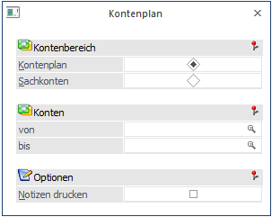
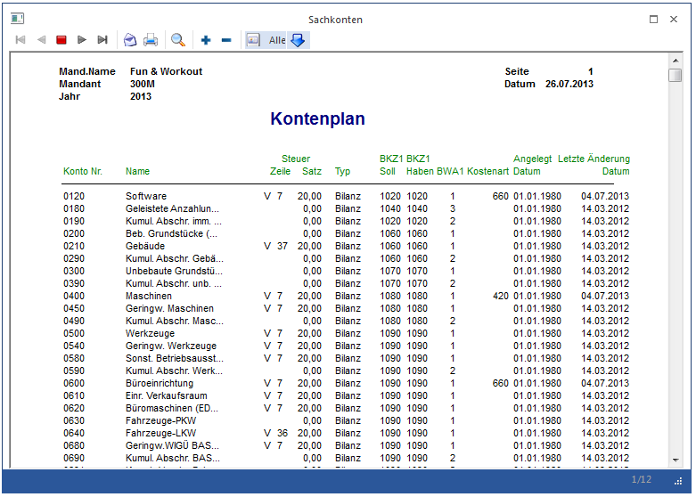

Im Menüpunkt
1 Auswertungen
1 Kontenlisten
1 Kontenplan
oder Schnellaufruf
1 STRG + L
kann eine Liste des Kontenplanes mit den Stamminformationen der Konten der Firma abgerufen werden.

Der Anwender legt den Umfang der Auswertung durch Auswahl der gewünschten Kontenklassen fest.
Ø Bildschirm/Drucker
Festlegung, ob der Ausdruck auf den Bildschirm oder auf den Drucker ausgegeben werden soll.
Ø Kontenbereich
Kontenstamm: Ausdruck aller Kontenarten (Sachkonten und Personenkonten).
Sachkonten: Beschränkung des Ausdruckes auf gespeicherte Sachkonten (= Konten mit dem Kennzeichen Bestands- und Erfolgskonto).
Ø Konten von / bis
Einschränkung des Ausgabebereichs über die Kontonummer
Ø Notizen drucken
Wird diese Checkbox aktiviert, wird bei jedem Konto auch die Textinformation angedruckt, die im Kontenstamm hinterlegt wurde.
Durch Drücken der F5-Taste wird der Ausdruck gestartet.
